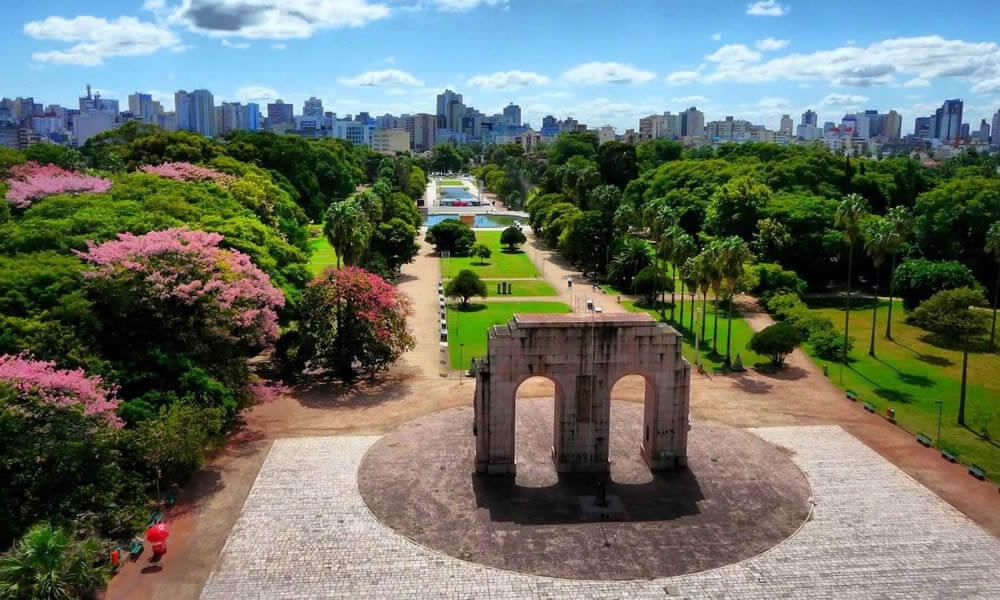

A Cidade
Porto Alegre é a capital do Rio Grande do Sul e está localizada na Região Sul do Brasil. A cidade de Porto Alegre tem como data oficial de fundação 26 de março de 1772, com a criação da Freguesia de São Francisco do Porto dos Casais, um ano depois alterada para Nossa Senhora da Madre de Deus de Porto Alegre. Porto Alegre tem pluralidade cultural e a vocação para a diversidade se refletem em uma rica gastronomia, nas diversas opções de vida noturna, atrações culturais e lazer. Este mosaico, somado aos cenários e o clima distintos das demais regiões do Brasil, faz da capital dos gaúchos - como são chamados os que nascem no Estado do Rio Grande do Sul - um destino que cativa aqueles que descobrem seus encantos (prefeitura.poa.br)
